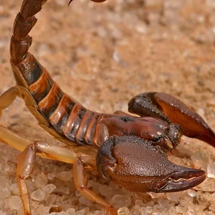
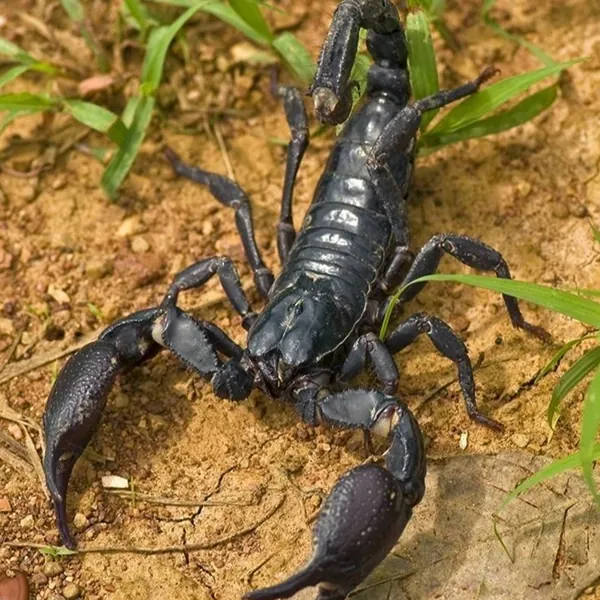

دیدن یک عقرب در کفش یا زیرزمین، یا یک روتیل درشت روی دیوار، برای هر خانوادهای نگرانکننده است؛ بهخصوص در محلههای حاشیه کرج، ویلاها و خانههای حیاطدار که با زمینهای خاکی و ساختوساز همجوارند. خبر خوب این است که با شناخت درست این دو جانور و روش اصولی، میتوان خانه را از آنها پاکسازی کرد. در این راهنما تفاوت عقرب و روتیل، اقدامات لازم پس از نیش، راههای پیشگیری و روند دفع تخصصی عقرب در کرج را میخوانید.
شناخت عقرب و روتیل و تفاوت آنها
عقرب و روتیل هر دو از ردهٔ عنکبوتیاناند، هر دو شبفعالاند و هر دو برای شکار حشرات وارد محیطهای انسانی میشوند؛ اما از نظر خطر واقعی تفاوت بزرگی دارند. عقرب با بیش از دو هزار گونه در جهان، دم زهردار دارد و برخی گونههای آن بهویژه در مناطق گرم ایران خطرناکاند. روتیل (که به آن عنکبوت شتری هم میگویند) برخلاف شهرتش اصلاً غدهٔ زهری ندارد و خطر آن به آروارههای قوی و گاز دردناکش محدود میشود.
| ویژگی | عقرب | روتیل |
|---|---|---|
| ظاهر | چنگال جلویی و دم خمیده با نیش انتهایی | شبیه عنکبوت درشت و پرزدار با آرواره بزرگ |
| زهر | دارد؛ در برخی گونهها خطرناک | ندارد؛ فقط گاز دردناک |
| رفتار | کند و پنهانکار، در شکافها کمین میکند | بسیار سریع، به سمت سایه و نور حرکت میکند |
| خطر اصلی | نیش زهرآگین؛ نیازمند مراجعه به درمانگاه | ترس و در موارد نادر عفونت محل گاز |
هر دو جانور برای شکار حشرات وارد خانه میشوند؛ نکتهای کلیدی که در بخش دفع به آن برمیگردیم: خانهای که سوسک و حشره دارد، برای عقرب سفرهای پهن است.
نشانههای حضور عقرب در خانه
- دیدن عقرب زنده در زیرزمین، انباری، حمام یا داخل کفش و لباس مانده روی زمین.
- مشاهدهٔ پوستههای بهجامانده از پوستاندازی عقرب در پشت وسایل و کنجهای تاریک.
- حضور عقرب در حیاط، زیر سنگها، آجرهای چیدهشده و الوارهای روی زمین.
- ساختوساز یا خاکبرداری تازه در زمینهای اطراف که پناهگاه عقربها را بههم میزند و آنها را به خانههای مجاور میراند.
- وفور حشرات (غذای عقرب) در ساختمان، بهخصوص سوسک.
خطرات نیش عقرب و گاز روتیل
شدت خطر نیش عقرب به گونه، سن فرد و میزان زهر بستگی دارد. علائم رایج عبارتاند از درد شدید و سوزش، تورم و قرمزی، تعریق، تهوع و افزایش ضربان قلب؛ در موارد شدید — بهویژه در کودکان و سالمندان — نیش برخی گونهها میتواند خطر جانی داشته باشد. بنابراین پس از هر نیش عقرب، مراجعهٔ سریع به مرکز درمانی ضروری است: عضو گزیدهشده را بیحرکت نگه دارید، محل را نبندید و تیغ نزنید و در مسیر درمانگاه آرامش فرد را حفظ کنید.
دربارهٔ روتیل، صادقانه باید گفت خطر آن بسیار کمتر از شهرت ترسناکش است: زهر ندارد و باور رایج «بیحسکننده بودن بزاق و خوردن گوشت انسان در خواب» پایه علمی ندارد. با این حال گاز آن دردناک است و مانند هر زخم دیگری باید شسته و ضدعفونی شود تا عفونت نکند.
راههای پیشگیری از ورود عقرب
- درز و شکاف دیوارها، کف، چهارچوبها و محل عبور لولهها را با درزگیر مسدود کنید و زیر درها نوار درزگیر بچسبانید.
- حیاط را از آوار، سنگهای چیدهشده، الوار و ضایعات پاکسازی کنید؛ اینها پناهگاه محبوب عقرباند.
- کفشها و لباسها را روی زمین رها نکنید و پیش از پوشیدن بتکانید — بهخصوص در ویلا و زیرزمین.
- حشرات خانه را کنترل کنید؛ با حذف سوسک و حشرات خانگی، منبع غذای عقرب از بین میرود.
- نور زرد ملایم برای روشنایی حیاط انتخاب کنید؛ نور سفید قوی، حشرات و بهدنبال آنها شکارچیان را جذب میکند.
- در مناطق پرخطر، هنگام کار در باغچه دستکش و کفش بسته بپوشید.
اقدامات خانگی و محدودیتهای آنها
تلههای چسبی در کنج دیوارها میتوانند عقربهای در حال عبور را گرفتار کنند و نظافت و مسدودسازی، احتمال ورود را کم میکند. اما بدانید که عقرب نسبت به بسیاری از حشرهکشهای خانگی مقاوم است؛ متابولیسم کند و بدن زرهمانندش باعث میشود اسپریهای معمولی اثر محدودی داشته باشند. عقربها هفتهها بدون غذا در شکافها میمانند و جایی پنهان میشوند که دست و اسپری شما نمیرسد. اگر بیش از یکی دو مورد عقرب در فصل گرم دیدهاید، یعنی زیستگاه فعالی در ساختمان یا محوطه وجود دارد و وقت اقدام تخصصی است.
روند دفع تخصصی عقرب در آرام محیط البرز
آرام محیط البرز با مجوز رسمی وزارت بهداشت، درمان و آموزش پزشکی و مدیریت مهندس فاطمه براتی، کارشناس بهداشت محیط، دفع عقرب و روتیل را در منازل، ویلاها و انبارهای کرج به این صورت انجام میدهد:
۱. مشاوره و بازدید رایگان
کارشناس پناهگاهها و مسیرهای ورود را در ساختمان و محوطه شناسایی میکند و پیش از شروع کار، برنامه و هزینه دقیق را اعلام میکند.
۲. سمپاشی هدفمند با سم مجاز
درزها، شکافها، پشت وسایل، زیرزمین و دیوارهای محوطه با سموم دارای مجوز وزارت بهداشت و مؤثر بر بندپایان تیمار میشود و همزمان حشرات طعمه نیز کنترل میشوند تا محیط برای عقرب جذابیتی نداشته باشد.
۳. ضمانت کتبی و توصیههای ایمنی
پس از اجرا، ضمانتنامه کتبی دریافت میکنید و نقاطی که باید مسدودسازی یا پاکسازی شوند به شما اعلام میشود تا نتیجه پایدار بماند.
عوامل مؤثر بر هزینه دفع عقرب در کرج
- مساحت ساختمان و محوطه (حیاط، باغچه، انباری).
- شدت حضور عقرب و تعداد پناهگاههای شناساییشده.
- نیاز به کنترل همزمان حشرات به عنوان منبع غذا.
- موقعیت ملک؛ مجاورت با زمین بایر یا ساختوساز.
جمعبندی و راه ارتباط
عقرب برخلاف حشرات با یک اسپری از پا در نمیآید؛ دفع اصولی آن ترکیبی از مسدودسازی، حذف پناهگاه، کنترل حشرات طعمه و سمپاشی هدفمند است. اگر در خانه یا ویلای خود در کرج عقرب یا روتیل دیدهاید، ریسک نکنید و برای بازدید و مشاوره رایگان با کارشناسان آرام محیط البرز تماس بگیرید: 09193613357 و 026-34209019. برای مهمان ناخواندهٔ دیگر زیرزمینها و انبارها هم راهنمای دفع موش و جوندگان در کرج را بخوانید.
سوالات متداول دفع عقرب و روتیل
در صورت نیش عقرب چه کار کنیم؟
خونسردی خود را حفظ کنید، عضو گزیدهشده را بیحرکت و پایینتر از سطح قلب نگه دارید و در اسرع وقت به اورژانس یا درمانگاه مراجعه کنید. محل نیش را نبندید، تیغ نزنید و مکش نکنید. اگر امکان داشت، رنگ و شکل عقرب را به خاطر بسپارید تا به تیم درمان کمک کند.
آیا روتیل سمی است؟
روتیل برخلاف تصور رایج غده زهری ندارد و سمی نیست؛ اما آروارههای قدرتمندی دارد و گاز آن دردناک است و در صورت رعایت نکردن بهداشت زخم ممکن است عفونت کند. ترس اصلی از روتیل به دلیل ظاهر و سرعت زیاد آن است، نه زهرش.
چرا عقرب وارد خانه میشود؟
عقرب به دنبال سه چیز وارد ساختمان میشود: پناهگاه تاریک و خنک (زیرزمین، انباری، کفش و وسایل روی زمین)، رطوبت و شکار. اگر خانه شما حشراتی مانند سوسک دارد، برای عقرب یک منبع غذایی جذاب است؛ به همین دلیل دفع حشرات، بخشی از برنامه دفع عقرب است.
سمپاشی عقرب چگونه انجام میشود و آیا مؤثر است؟
عقرب نسبت به بسیاری از سموم معمولی مقاومتر از حشرات است؛ بنابراین دفع مؤثر ترکیبی است از سمپاشی درز و شکافها و محلهای اختفا با سم مجاز و مؤثر بر بندپایان، حذف پناهگاهها، مسدودسازی مسیرهای ورود و کنترل حشراتی که غذای عقرباند. با این روش ترکیبی نتیجه ماندگار به دست میآید.
هزینه دفع عقرب در کرج چقدر است؟
هزینه به مساحت ساختمان و محوطه، شدت حضور عقرب، تعداد پناهگاهها و نیاز به کنترل همزمان حشرات بستگی دارد. بازدید و مشاوره کارشناسان آرام محیط البرز رایگان است و قیمت پیش از شروع کار بهصورت شفاف اعلام میشود. برای استعلام با شماره 09193613357 تماس بگیرید.